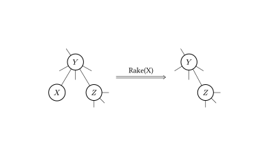
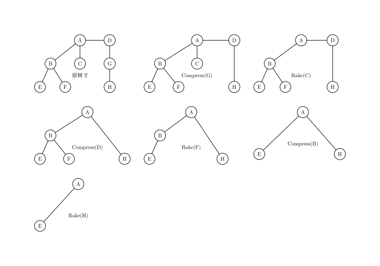
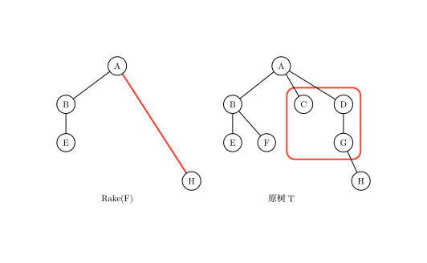
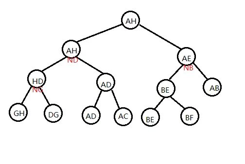
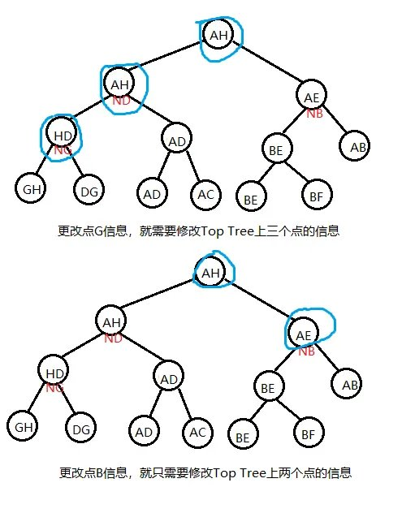
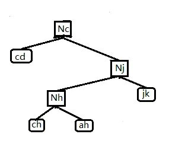
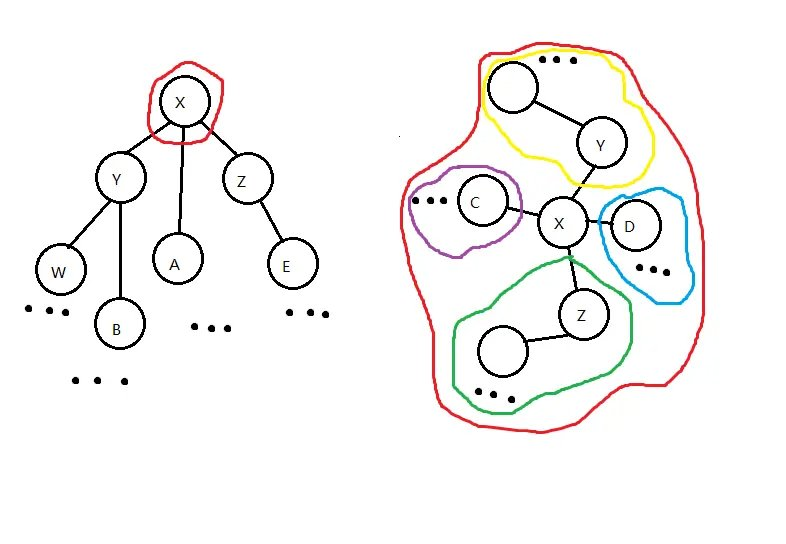

Top tree
Self-Adjusting Top Tree
简介
Self-Adjusting Top Tree，是 2005 年 Tarjan 和 Werneck 在他们的论文 Self-Adjusting Top Trees 中提出的一种基于 Top Tree 理论的维护完全动态森林的数据结构，简称为 SATT．
Self-Adjusting Top Tree 可以实现森林中任一棵树的链修改/查询、子树修改/查询以及非局部搜索等操作．
Splay Tree 是 SATT 的基础，但是 SATT 用的 Splay Tree 和普通的 Splay 在细节处不太一样（进行了一些扩展）．
问题引入
维护一个森林，支持如下操作：
-
删除，添加一条边，保证操作前后仍是一个森林．
-
修改某棵树上某条简单路径的权值．
-
修改以某个点为根的子树权值．
-
查询某棵树上的某条简单路径权值和．
-
查询以某个点为根的子树权值和．
树收缩
对于任意一棵树，我们都可以运用 树收缩 理论来将它收缩为一条边．
具体地，树收缩有两个基本操作：Compress 和 Rake，Compress 操作指定一个度数为 $2$ 的点 $x$，与点 $x$ 相邻的那两个点记为 $y$、$z$，我们连一条新边 $yz$；将点 $x$、边 $xz$、边 $xy$ 的信息放到 $yz$ 中储存，并删去它们．如图所示．

Rake 操作指定一个度为 $1$ 的点 $x$，而且与点 $x$ 相邻的点 $y$ 的度数需大于 $1$，设点 $y$ 的另一个邻点为 $z$，我们将点 $x$、边 $xy$ 的信息放入边 $yz$ 中储存，并删去它们．如图所示．

不难证明，任何一棵树都可以只用 Compress 操作和 Rake 操作来将它收缩为一条边，如图所示．

簇
为了表达方便，我们记在进行任何操作之前的原树为 $T$．在对 $T$ 进行某些树收缩操作（可以不做任何操作）之后的树记为 $T_x$．
我们研究某个 $T_x$ 中某一条边所包含的信息情况．
这条边除了带有它本身的信息（当然，如果这条边在 $T$ 中不存在，这条边就没有本身的信息）之外，还可能包含其它通过 Compress/Rake 操作合并到它上面的点、边的信息．我们不妨先从下图中的树收缩过程中选取一条边，看看它所包含的信息在 $T$ 中代表哪些点、边．

如图，选取的边和对应的图已用红线圈出．
可以看出，这条边所包含的信息在 $T$ 中代表的点、边是连通的．我们可以推及，对于任一 $T_x$ 中的任一条边储存的信息在 $T$ 中总体现为一个连通子图．我们将这样的连通子图称为 簇（Cluster）．
然而，簇是 不完整的子图，它包含的某些边的端点不被簇它自己包含．于是我们将这些端点称作簇的 端点（Endpoint），将它包含的那些连通子图的点称作 内点（Internal Node），连通子图的边称作 内边（Internal Edge）．
对于任意一个簇，都有以下性质：
-
簇只存储和维护内点和内边的信息．
-
簇有两个端点．这两个端点即为 $T_x$ 中代表那个簇的边相连的那两个点．两个端点之间的路径我们称之为 簇路径（Cluster Path）；记一个簇的两个端点分别为 $x$、$y$，我们下面用 $C(x,y)$ 来表示这个簇．
-
内点仅与端点或内点相连．
特别地，对于 $T$ 中的每条边，都各自独立为一个簇（仅包含边自己的信息），这种簇我们称之为 基簇（Base Cluster）．对于由 $T$ 收缩到只有一条边的最终的 $T_x$，那条边代表的簇包含除了两个端点之外的整棵 $T$ 的信息，这个簇我们称之为 根簇（Root Cluster）．

如图，上文提到的基簇已用红线标出．
从簇的视角来看 Compress/Rake 操作，我们发现这两个操作会将两个簇「合二为一」，剩下一个新簇，所以树收缩的过程也是所有的基簇合并为一个簇的过程．
所以我们也可以得到下图，是对一系列树收缩操作的另一表示．

Top Tree
我们现在想表示某一棵树进行树收缩的全过程．
我们可以用上文的两种方法来表示这一过程，但这样十分麻烦，如果树收缩进行了 $n$ 步，我们就要用 $n$ 棵树来表示整个树收缩．
考虑一个对某棵树进行某一树收缩的更简便表示，我们引入 Top Tree．

如图，是以上文的收缩方法和原树为基础的一棵 Top Tree．
Top Tree 有以下性质；
-
一棵 Top Tree 对应一棵原树和一种对其进行树收缩的方法，Top Tree 的每个节点都表示在某个 $T_x$ 中的某一条边，也就是树收缩过程中形成的某一个簇．图中的形如 $N_x$ 的点表示
compress(x)这一操作形成的簇． -
Top Tree 中的一个节点有两个儿子（都分别代表一个簇），这个节点代表的簇是这两个簇通过 Compress 或 Rake 操作合并得到的新簇．
-
Top Tree 的叶子节点是基簇，其根节点是根簇．因此我们按一棵 Top Tree 的拓扑序分层，它的每一层就代表了一棵 $T_x$．
用三度化 Self-Adjusting Top Tree 实现信息维护
原理
Top Tree 对树收缩过程的极大简化，使我们看到通过维护树收缩过程来维护树上信息的可能性，SATT 即是通过这一原理来维护树上信息的．
注意到树收缩的过程也是树上信息不断加入的过程，我们执行一次 compress(x)，$x$ 点的信息从此刻起就开始在某个簇中出现，影响着我们的统计结果．
假如我们现在用 Top Tree 来维护某棵树 $T$，树上的每个点，边都有权值，我们要维护的是 $T$ 的权值和．
现在我们在维护时要对 $T$ 中某个点 $x$ 的权值进行修改，很明显，我们就需要更改 Top Tree 中所有簇信息包含 $x$ 的节点信息，这样做单次时间复杂度会是 $O(n)$ 级别的．
然而，如果我们选的点它在 Top Tree 中簇信息包含 $x$ 的节点个数很少，也就是说使它的信息尽可能晚地加入簇中，我们单次操作的时间复杂度就会有一个很大的提升．如图．

SATT 就是通过修改 某个点/某条路径 在树收缩过程中信息被加入簇中的先后顺序（以降低其在被修改时的单次时间复杂度）来维护树上信息的．
实际结构
我们先将一棵原树 $T$ 分层定根，然后我们考虑对某种树收缩顺序的 Top Tree 的根簇，它有两个端点，我们令这其中一个端点就是原树的根，另一个端点任选．

如图，给根簇选出一组端点，这里标注簇时将端点也圈进去了．
由树收缩的基本操作可知，簇路径上的点、边 $(j,h,c,jh,hc)$ 的信息最后是通过 Compress 操作才加入 $C(k,g)$ 的，而的非簇路径点 $(a,b,i,f,g,e,ig,\cdots)$ 是通过 Rake 操作才加入 $C(k,g)$ 的．
我们将簇路径单独拿出来，这是一条形态特殊（为链）的树，我们为这棵树建出一棵 top tree（其代表的树收缩顺序任意）．

我们将这一结构称之为 Compress Tree，因为在这棵 Top Tree 中任一个点的两个儿子之间是通过 Compress 操作来合并成它们的父亲．
Compress Tree 里的节点称为 Compress Node．只考虑当前这条簇路径，一个非叶子的 Compress Node 就代表一次 compress 过程，表示将左儿子和右儿子信息合并起来，再将这个 compress(x) 本身存储的点 $x$ 信息加入．这棵 Compress Tree 就维护了 $C(k,g)$ 簇路径的信息．
另外，在 Compress Tree 中，我们实际上还对使用的 Top Tree 做了一些限制．注意到 Compress Tree 维护的是一个 $T$ 中点的深度两两不同的链，我们规定在 Compress Tree 中基簇的中序遍历顺序与对应的 $T$ 中边的深度是一致的，且中序遍历越小深度越浅．同样，对于每个点 $x$ 对应的 compress(x) 的关系也是如此．
现在来维护那些非簇路径的信息，我们假设这些非簇路径上的点、边已经形成了一个个极大簇，而这些极大簇是由这些用蓝线圈出的更小簇之间互相 Rake 形成的，对由一些更小簇合并形成一个极大簇的过程，我们用一个三叉树来表示，类似地，我们称这一结构为 Rake Tree，对应地 Rake Tree 里的点就是 Rake Node．每个 Rake Node 都代表一个簇，是由其左儿子和右儿子 Rake 到其中儿子代表的更小簇上形成的．具体可见下图，可知 Rake Tree 中的每个点都代表了 $T$ 中具有相同端点的更小簇．

如图，蓝线圈出的是一个个极大簇，黄线圈出的是一个个更小簇．
对于那些更小簇，我们对它们进行相同处理，给它们选择簇路径、建出 Compress Tree、……如此递归下去，就建出了许多表示树收缩过程的 Compress Tree，Rake Tree．

上图为原树的 Rake-Compress Tree（因为每个 Rake Node 都连着一棵 Compress Tree，所以表现为一棵 Rake Tree 连着许多 Compress Tree 的形态）和代表根簇路径的 Compress Tree．
考虑将这些树以某种方式拼接在一起，使它们形成一个有序的整体．记一个 Rake Tree 代表的最小簇的集合的公共端点是点 $x$．我们给这些 Rake Node 的中儿子（一个 Compress Tree 集合）都加入非 $x$ 的另一端点，但仍保持其中序遍历和 Top Tree 的基本性质，如图．

这一步相当于是让 Rake 操作加入某个 $T$ 中点的操作直接发生在 Compress Tree 中，这不仅使我们能正确维护 Rake Node 的信息（只需将三个儿子信息合并即可），还使我们 Compress Tree 的结构更完整．下一步，我们将 Compress Tree 改为三叉树，若某个 Rake Tree 的公共端点是点 $x$，我们就将 Rake Tree 挂在 compress(x) 的中儿子处，如图．

此时经过三叉化的 compress(x) 点，它的意义就变成先将其中儿子 Rake 到簇路径上，再统计左右儿子和点 $x$ 的信息．
最后，我们再处理一下根簇路径的那棵 Compress Tree：与其它所有 Compress Tree 一致地，按中序遍历加入它的两个端点，使得它的根储存整棵 $T$ 的信息．
于是我们就实现了用三度化 Self-Adjusting Top Tree 实现一棵树的信息维护．

总结一下，SATT 有以下性质：
-
SATT 由 Compress Tree 和 Rake Tree 组成，Compress Tree 是一棵特殊的 Top Tree；Rake Tree 是一个三叉树，它们都对应一棵树进行树收缩的过程．
-
Compress Tree 里的点最多有三个儿子．Compress Tree 可以做类似于 Splay 树的旋转操作（只需保证其中序遍历不变即可，旋转一个点时保持其中儿子不动）．
-
Rake Tree 里的点一定有一个中儿子．Rake Tree 可以做类似于 Splay 树的旋转操作（只需保证其中序遍历不变即可，旋转一个点时保持其中儿子不动）．
-
SATT 的拓扑序反映了原树 $T$ 的树收缩顺序．
我们在上文中提到的「修改某个点/某条路径在树收缩过程中信息被加入簇中的先后顺序」SATT 是否能实现呢，答案是肯定的．
在 SATT 中，有一个 access(x) 的操作，它的作用是使某点 $x$ 成为根簇的非根端点，同时在 SATT 中使 compress(x) 成为 SATT 的根．
我们可以通过 access(x) 操作以均摊 $O(\log n)$ 的复杂度使 SATT 中代表 compress(x) 的点旋到整棵 SATT 的树根，根据 SATT 的第四个性质，我们改变了 compress(x) 的操作顺序，使得它最晚执行，$x$ 点的信息也就被最晚加入；这样当我们要修改 $x$ 点的信息时，就只需要更新 compress(x)．
代码实现
Push 类函数
首先考虑上传信息，即 Pushup(x) 函数．在考虑对 SATT 的某个节点维护信息时，首先分这个点在 Compress Tree 还是在 Rake Tree 进行讨论，原因可见上文，不再赘述，下面以维护某个点的子树大小为例
// ls(x) x的左儿子
// rs(x) x的右儿子
// ms(x) x的中儿子
// type==0 是 Compress Node
// type==1 是 Rake Node
void pushup(int x, int type) {
if (type == 0)
size[x] = size[rs(x)] + size[ms(x)] + 1;
else
size[x] = size[rs(x)] + size[ms(x)] + size[ls(x)];
return;
}
查询点 $x$ 的子树大小，就将其 Access 到 SATT 根，答案是其中儿子的 size $+1$；因为根据上文，在 Access 之后，其中儿子才是它的真子树．
然后考虑下传信息，即 Pushdown(x) 函数．我们如果要对原树中的某个子树做整体修改，一个很自然的想法是：将这个节点直接 Access 到 SATT 根节点，给它的中儿子打上一个标记即可．同理，查询子树就直接 Access 后查询中儿子．
我们如果要对原树中的某条路径做整体修改，我们就 expose 路径的两个端点，其中 expose(x, y) 是指使点 $x$ 成为 $T$ 的根节点，使点 $y$ 成为根簇的另一个端点．对应在 SATT 上，此时根簇的 Compress Tree 就是 $x$ 到 $y$ 的路径．于是直接给根簇的 Compress Tree 打上一个标记即可．同理查询链 expose 后查询根节点即可．
于是我们就知道问题引入的问题怎么做了．
void pushdown(int x, int type) {
if (type == 0) {
// 处理链
chain[ls(x)] += chain[x] chain[rs(x)] += chain[x];
val[ls(x)] += chain[x];
val[rs(x)] += chain[x];
// 处理子树
subtree[ls(x)] += subtree[x];
subtree[rs(x)] += subtree[x];
subtree[ms(x)] += subtree[x];
val[ls(x)] += subtree[x];
val[rs(x)] += subtree[x];
val[ms(x)] += subtree[x];
subtree[x] = 0;
} else {
subtree[ls(x)] += subtree[x];
subtree[rs(x)] += subtree[x];
subtree[ms(x)] += subtree[x];
val[ls(x)] += subtree[x];
val[rs(x)] += subtree[x];
val[ms(x)] += subtree[x];
subtree[x] = 0;
}
return;
}
// 下传标记
void pushall(int x, int type) {
if (!isroot(x)) pushall(father[x], type);
pushdown(x, type);
return;
}
Splay 类函数
我们知道 SATT 中的 Rake Tree 和 Compress Tree 都是可以旋转的，也就是说它们可以用 Splay 来维护．因此我们可以写出以下代码：
// 是一个节点的中儿子或无父亲
// ls 一个SATT节点的左儿子
// rs 一个SATT节点的右儿子
// ms 一个SATT节点的中儿子
// type==1 在 Rake Tree中
// type==0 在 Compress Tree中
bool isroot(int x) { return rs(father[x]) != x && ls(father[x]) != x; }
bool direction(int x) { return rs(father[x]) == x; }
void rotate(int x, int type) {
int y = father[x], z = father[y], d = direction(x), w = son[x][d ^ 1];
if (z) son[z][ms(z) == y ? 2 : direction(y)] = x;
son[x][d ^ 1] = y;
son[y][d] = w;
if (w) father[w] = y;
father[y] = x;
father[x] = z;
pushup(y, type);
pushup(x, type);
return;
}
void splay(int x, int type, int goal = 0) {
pushall(x, ty); // 下传标记
for (int y; y = father[x], (!isroot(x)) && y != goal; rotate(x, ty)) {
if (father[y] != goal && (!isroot(y))) {
rotate(direction(x) ^ diretion(y) ? x : y, type);
}
}
return;
}
值得注意的是，函数 direction 和 isroot 与普通 Splay 的不同．因为无论这个点怎么转，这个点的中儿子是不会变的．
Access 类函数
access(x) 的意义是：将点 $x$ 旋转到整个 SATT 的根处，使点 $x$ 成为根簇的两个端点之一（另一端点即为 $T$ 的根节点），同时不能改变原树的结构和原树的根．
为了实现 access(x)，我们先将其旋转到其所在 Compress Tree 的树根，再把点 $x$ 的右儿子去掉，使点 $x$ 成为其所在 Compress Tree 对应簇的端点．
if (rs(x)) {
int y = new_node();
setfather(ms(x), y, 0);
setfather(rs(x), y, 2);
rs(x) = 0;
setfather(y, x, 2);
pushup(y, 1);
pushup(x, 0);
}
如果这时点 $x$ 已经到了根部，则退出；若没有，则执行以下步骤，以让它跨过它上面的 Rake Tree：
-
将其父亲节点（一定是一个 Rake Node），splay 到其 Rake Tree 的树根；
-
将 $x$ 的爷节点（一定是一个 Compress Node）splay 到其 Compress Tree 根部．
-
若 $x$ 的爷节点有一个右儿子，则将点 x 和爷节点的右儿子互换，更新信息，然后退出．
-
若爷节点没有右儿子，则先让点 $x$ 成为爷节点的右儿子，此时点 $x$ 原来的父节点没有中儿子，根据上文 Rake Node 的性质，它不能存在．于是调用
Delete函数，将其删除，然后退出．
1，2 两个步骤合称为 Local Splay．3，4 两个步骤合称为 Splice．但我们方便起见，将它们都写在 Splice(x) 函数里．
上文提到的 Delete(x) 函数是这样的：
-
检视将要删除的点 $x$ 有没有左儿子，若有，则将左儿子的子树后继续旋转到点 $x$ 下方（成为新的左儿子），然后将右儿子（若有）变成左儿子的右儿子，此时点 $x$ 的左儿子就代替了点 $x$．这相当于 Splay 的合并操作．
-
若没有左儿子，则直接让其右儿子代替点 $x$．
不难发现，Splice(x) 改变了原树的一些簇的端点选取．一次 splice 完了之后，我们将点 $x$ 的父亲节点当作新的点 $x$，进行下一次 splice．
最终我们会发现，我们最开始要操作的点 $x$ 一定在根簇的 Compress Tree 最右端．我们只需最后做一次 Global Splay，将其旋至 SATT 根部即可．
// ls 一个SATT节点的左儿子
// rs 一个SATT节点的右儿子
// ms 一个SATT节点的中儿子
// son[x][0] ls
// son[x][1] rs
// son[x][2] ms
// type==1 在 Rake Tree中
// type==0 在 Compress Tree中
int new_node() {
if (top) {
top--;
return Stack[top + 1];
}
return ++tot;
}
void setfather(int x, int fa, int type) {
if (x) father[x] = fa;
son[fa][type] = x;
}
void Delete(int x) {
setfather(ms(x), father[x], 1);
if (ls(x)) {
int p = ls(x);
pushdown(p, 1);
while (rs(p)) p = rs(p), pushdown(p, 1);
splay(p, 1, x);
setfather(rs(x), p, 1);
setfather(p, father[x], 2);
pushup(p, 1);
pushup(father[x], 0);
} else
setfather(rs(x), father[x], 2);
Clear(x);
}
void splice(int x) {
// local splay
splay(x, 1);
int y = father[x];
splay(y, 0);
pushdown(x, 1);
// splice
if (rs(y)) {
swap(father[ms(x)], father[rs(y)]);
swap(ms(x), rs(y));
} else
Delete(x);
pushup(x, 1);
pushup(y, 0);
}
void access(int x) {
splay(x, 0);
if (rs(x)) {
int y = new_node();
setfather(ms(x), y, 0);
setfather(rs(x), y, 2);
rs(x) = 0;
setfather(y, x, 2);
pushup(y, 1);
pushup(x, 0);
}
while (father[x]) {
splice(father[x]);
x = father[x];
pushup(x, 0);
}
splay(x, 0) // global splay
}
若要让一个点成为原树的根，那么我们就将点 $x$ Access 到 SATT 的根节点，可知此时点 $x$ 已经是最终状态的簇一个端点．由 Compress Tree 的中序遍历性质可知，将点 $x$ 所在的 Compress Tree 左右颠倒（所有点的左右儿子互换），就使点 $x$ 成为原树的根．在具体实现中，我们通过给点 $x$ 打上一个翻转标记，之后下传来进行这一过程．
void makeroot(int x) {
access(x);
push_rev(x);
}
于是 expose(x, y) 就呼之欲出：
void expose(int x, int y) {
makeroot(x);
access(y);
}
Link & Cut
现在我们要将原树中两个不连通的点之间连一条边，我们先让其中的一个点 $x$ 成为原树的根，再将另一个点 $y$ 旋转到根处，可知此时应该使点 $y$ 成为点 $x$ 的右儿子．然后在点 $y$ 的右儿子上挂上这一条边（在只需维护点的 SATT 中，这一步可省）．
void Link(int x, int y, int z) {
// z代表连接 x, y的边
access(x);
makeroot(y);
setfather(y, x, 1);
setfather(z, y, 0);
pushup(x, 0);
pushup(y, 0);
}
Cut 跟 Link 原理差不多
void cut(int x, int y) {
expose(x, y);
clear(rs(x)); // 删掉 xy 这一基簇
father[x] = ls(y) = rs(x);
pushup(y, 0);
}
完整代码
??? note "Luogu P3690【模板】动态树"
cpp
--8<-- "docs/ds/code/top-tree/top-tree_1.cpp"
SATT 的时间复杂度证明
设在一棵 SATT（点数为 $n$）中，其当前状态 $x$ 的势能函数为
$$ \varphi(x)= \sum_{i=1}^{n} r(i) $$
其中 $r(i) = \lceil \log_2 \text{siz}(i) \rceil$．$\text{siz}(i)$ 为以 $i$ 为根的子树大小．
则 SATT 的 splay 的均摊复杂度显然仍是 $3n\log n + 1$，即使 SATT 是一个三叉树．
因此对于 SATT，我们只要证得 Access 函数复杂度正确，就能证得 SATT 的时间复杂度．
我们逐步分析 Accese 的均摊复杂度．
我们先要将点 $x$ 旋至其所在 Compress Tree 的根，则这一步的均摊复杂度
$$ a \leq 3\log n +1 $$
接着我们要使点 $x$ 无右儿子，则这一步的均摊复杂度
$$ a = 1 + r'(\gamma)- 0 \leq \log n +1 $$

如图，为去掉点 $x$ 的右儿子过程．
然后是 Local Splay，Splice 交替进行的过程，经过若干次 Splice，点 $x$ 被旋至 SATT 的根．我们对其中一组 Local Splay，Splice 进行分析：


如图，体现了对点 $x$ 做一次 Splice 的过程，不包括最后左旋点 $x$ 的部分．
为表达方便，设 $r_x(i)$ 为点 $i$ 在状态 $x$ 时的 $r$ 值．
由图，易知由状态 1 到状态 2 的操作（将点 $x$ 的父亲旋至其 Rake Tree 的根部的 Local Splay 操作）的均摊复杂度
$$ a \leq 3(r_2(\gamma)- r_1(\gamma))+1 $$
由图，易知由状态 2 到状态 3 的操作（将点 $x$ 的爷节点旋至其 Compress Tree 的根部的 Local Splay 操作）的均摊复杂度
$$ a \leq 3(r_3(B)- r_2(B))+1 $$
重点分析由状态 3 到状态 4 的操作（Splice）
$$ a = r_4(\gamma) -r_3(\gamma) +1 $$
不难发现 $r_4(\gamma) \leq r_3(B)$
故这一次操作的均摊复杂度为
$$ \begin{aligned} a &\leq r_3(B)- r_3(\gamma)+1\ &\leq 3(r_3(B)- r_3(\gamma))+1\ \end{aligned} $$
综合上述过程，一次 Splice 的复杂度为
$$ a\leq 3r_3(B)+3r_3(B)+3r_2(\gamma)-3r_3(\gamma)-3r_2(B)-3r_1(\gamma)+3 $$
记下一次 Splice 的点 $X$（即状态 4 中的点 $B$）的 $r$ 值为 $r'(X)$，并注意到 $r_3(\gamma),r_1(\gamma) \ge r_1(X)$，$r_3(B),r_2(\gamma) \leq r'(X)$ 且 $r_3(B)=r_2(B)$，所以
$$ a\leq 9(r'(X)-r(X))+3 $$
除了上面这个复杂度以外，在 Splice 中可能还会有因 delete(x) 产生的额外均摊复杂度，记这一部分为 $a' \leq 3\log n +1$．
先不管 $a'$ 部分，每次 Splice 的 $r'(X)$ 等于下一次的 $r(X)$，且第一次 Splice 的 $r(X)$ 等于我们一开始旋转点 $x$ 到其 Compress Tree 树根时的 $r(X)$，则对于不计 delete(x) 的一次 access(x) 复杂度，我们有：
$$ a \leq 9(r'(x)-r(x))+ 3k + 1 $$
其中 $k$ 为 Splice 次数．
看样子 $a$ 会带一个 $3k+1$ 导致均摊复杂度无法分析，但我们有办法来对付它，注意到 zig-zig/zig-zag 的旋转可以这么均摊
$$ \begin{aligned} a &\leq 3(r'(X)-r(X)) + q\ &\leq 3(q-1)(r'(X)-r(X)) \end{aligned} $$
如果我们能找到足够多的 zig-zig，zig-zag 操作，我们就可以将这 $3k+1$ 平摊到这些操作上去，从而消掉这个 $3k+1$．
我们发现 Globel Splay 里面就有这么多的 zig-zig，zag-zig 来给我们使用，因为 Globel Splay 里面点的个数一定大于 $k$，而从点 $x$ 到 Globel Splay 根部路径的点数一定不少于 $k$，也就是说一次 access(x) 中一定会至少有 $\dfrac k2$ 个 zig-zag 操作，算上 Globel Splay 的均摊复杂度 $a \leq 3\log n +1$，一次 access(x) 不记 delete(x) 的均摊复杂度为
$$ \begin{aligned} a&\leq 9(r'(X)-r(X)) + 3k + 1 + 18(r''(X)-r'(X)) -S+1 +3 \log n +1,S \ge 3k\ a&\leq 18(r''(X)-r(X)) +2 +3\log n+1\ a&\leq 21(r''(X)-r(X)) +3 \end{aligned} $$
现在算上 $a'$，列出进行 $m$ 次 access(x) 操作的总式子．
$$ \sum_{i=1}^m a_i' + \sum_{i=1}^m a_i = \sum_{i=1}^m c_i + \varphi(x_n) -\varphi(x_0) $$
我们要求的是实际复杂度
$$ \begin{aligned} \sum_{i=1}^m c_i &= \sum_{i=1}^m a_i +\sum_{i=1}^m a_i' - \varphi(x_n) +\varphi(x_0)\ &\le \sum_{i=1}^m a_i' + 21m\log n +n\log n +3m \end{aligned} $$
注意到 delete(x) 操作的本质是删掉一个 Rake Node，但我们在 $m$ 次操作中最多只会添加 $m$ 个 Rake Node，由 Rake Node 的定义，我们初始时最多有 $n$ 个 Rake Node，也就是说我们总共只会做 $m+n$ 次 delete(x) 操作，由 $a' \leq 3\log n +1$ 可知
$$ \sum_{i=1}^m c_i \leq 3(m+n)\log n + 21m\log n +n\log n +4m +n $$
所以我们就证明了 Access 的复杂度，而其他函数要么基于 Access 要么单次时间复杂度为常数，所以我们就证明了 SATT 的复杂度．
顺便一提，如果像 LCT 一样省略 Global Splay 的过程，改为在每次 Splice 时直接将要 Access 的点旋转一下，这样做时间复杂度也是对的（实测省略 Global Splay 的版本要快很多，能与 LCT 在 Luogu P3690 跑得不分上下）．
例题
例题 1
???+ note "CEOI 2019 Dynamic Diameter" 给定一棵 $n$ 个节点的树，每条边有边权，有 $q$ 次更新，每次修改一条边的边权，并询问树的直径．强制在线．
维护动态直径，建出 SATT 后，我们只需要在 Pushup(x) 里面维护每个点的答案，最后查询根节点的答案（即整棵树的直径）就可以了．
void pushup(int x, int op) {
if (op == 0) {
// 是 Compress Node
len[x] = len[ls(x)] + len[rs(x)];
diam[x] = maxs[ls(x)][1] + maxs[rs(x)][0];
diam[x] =
max(diam[x], max(maxs[ls(x)][1], maxs[rs(x)][0]) + maxs[ms(x)][0]);
diam[x] = max(diam[x], max(max(diam[ls(x)], diam[rs(x)]), diam[ms(x)]));
maxs[x][0] =
max(maxs[ls(x)][0], len[ls(x)] + max(maxs[ms(x)][0], maxs[rs(x)][0]));
maxs[x][1] =
max(maxs[rs(x)][1], len[rs(x)] + max(maxs[ms(x)][0], maxs[ls(x)][1]));
} else {
// 是 Rake Node
diam[x] = maxs[ls(x)][0] + maxs[rs(x)][0];
diam[x] =
max(diam[x], maxs[ms(x)][0] + max(maxs[ls(x)][0], maxs[rs(x)][0]));
diam[x] = max(max(diam[x], diam[ms(x)]), max(diam[ls(x)], diam[rs(x)]));
maxs[x][0] = max(maxs[ms(x)][0], max(maxs[ls(x)][0], maxs[rs(x)][0]));
}
return;
}
其中 $diam$ 是当前点的答案（这个点代表的簇的直径）．$len$ 表示当前 Compress Node 所在簇路径的长度，$maxs_{0/1}$ 表示 Compress Node 到簇内点和端点的不选簇路径儿子/不选父亲的最大距离（如果是 Rake Node 则只存储选取当前簇的上端点到簇内点和端点的最大距离 $maxs_0$）．每次查询 SATT 根节点的 diam 即可，正确性显然．
注意对 Pushrev(x) 做一些改动．
void pushrev(int x) {
if (!x) return;
r[x] ^= 1;
swap(ls(x), rs(x));
swap(maxs[x][0], maxs[x][1]);
}
例题 2
???+ note "「CSP-S 2019」树的重心" 给定一棵树，求出单独删去树的每条边后，分裂出的两个子树的重心编号和之和．
假如我们能动态 $O(\log n)$ 维护树的重心，我们就做出这个题了．
SATT 支持动态 $O(\log n)$ 维护树的重心，做到这需要 非局部搜索（Non-local Search）．
对于一种树上的性质，如果一个点/一条边在整棵树中有这种性质，且在所有包含它的子树中都包含此种性质，我们就称这个性质是 局部的（Local），否则称它是 非局部的（Non-local）．局部信息一般可以通过 pushup(x) 来维护
例如，权值最小值是局部的，因为一个点/一条边如果在整棵树中权值最小，那么在所有包含它的子树中它也是权值最小的，而权值第二小显然就是非局部的．
我们上文维护的 $diam$ 也是局部信息．
回到正题，重心显然是一个非局部信息，无法通过简单的 pushup(x) 来维护．我们考虑在 SATT 上搜索：
我们的搜索从 SATT 的根节点，即根簇开始．注意到重心有很好的性质：假如有一条边的一侧点的个数大于等于另一侧点的个数，那么边的这一侧一定至少有一个重心（重心可能有两个）．
记 $sum$ 表示某一个簇的点个数，$maxs$ 为一棵 Rake Tree 的所有 Rake Node 中儿子的 $sum$ 最大值．
void pushup(int x, int op) {
if (op == 0) {
// 是 Compress Node
sum[x] = sum[ls(x)] + sum[rs(x)] + sum[ms(x)] + 1;
} else {
// 是 Rake Node
maxs[x] = max(maxs[ls(x)], max(maxs[rs(x)], sum[ms(x)]));
sum[x] = sum[ls(x)] + sum[rs(x)] + sum[ms(x)];
}
}

如图，为在进行 Non-local Search 时的 SATT 和对应的原树 $T$．
我们做如下比较：
-
比较簇 $compress(Y)$ 的 $sum$ 值与簇 $compress(Z)$、簇 $A$ 和点 $X$ 的并（我们暂称为簇 $\alpha$）的 $sum$ 值．若 $compress(Y)$ 的 $sum$ 值大于等于后者，说明至少有一个重心在 $compress(Y)$ 的子树中，我们递归到 $compress(Y)$ 搜索．（如果此处取等，点 $X$ 也是一个重心，需要记录）
-
比较簇 $compress(Z)$ 的 $sum$ 值与簇 $compress(Y)$、簇 $A$ 和点 $X$ 的并（我们暂称为簇 $\beta$）的 $sum$ 值．若 $compress(Z)$ 的 $sum$ 值大于等于后者，说明至少有一个重心在 $compress(Z)$ 的子树中，我们递归到 $compress(Z)$ 搜索．（如果此处取等，点 $X$ 也是一个重心，需要记录）
-
比较点 $x$ 中儿子 Rake tree 之中 $sum$ 最大的更小簇的 $sum$ 值与簇 $compress(Y)$、簇 $A$、点 $X$ 及其它更小簇的并（我们暂称为簇 $Y$）的 $sum$ 值，若那个更小簇的 $sum$ 值大于等于后者，说明至少有一个重心在那个更小簇的子树中，我们递归到它搜索．如果此处取等，点 $X$ 也是一个重心，需要记录．
-
若以上比较都不递归，则点 $X$ 一定是一个重心，记录并退出．
第一步的搜索显然正确，之后应该怎么搜呢？
假如我们递归到 $Y$，则现在 $Y$ 储存信息的并不完整，因为 $compress(Y)$ 里面只存储了它自己这个簇的信息，而我们要求的是整棵树的重心．解决方法是，将之前簇的信息记录下来，在点 $Y$ 上比较计算时将上一个簇的信息与点 $Y$ 自己的信息合并处理．具体实现如下：
void non_local_search(int x, int lv, int rv, int op) {
// lv 和 rv 都是搜索的上一个簇的信息
if (!x) return;
psd(x, 0);
if (op == 0) {
if (maxs[ms(x)] >=
sum[ms(x)] - maxs[ms(x)] + sum[rs(x)] + sum[ls(x)] + lv + 1 + rv) {
if (maxs[ms(x)] ==
sum[ms(x)] - maxs[ms(x)] + sum[rs(x)] + sum[ls(x)] + lv + 1 + rv) {
if (ans1)
ans2 = x;
else
ans1 = x;
}
non_local_search(
ms(x),
sum[ms(x)] - maxs[ms(x)] + sum[rs(x)] + sum[ls(x)] + 1 + lv + rv, 0,
1);
return;
}
if (ss[rs(x)] + rv >= ss[ms(x)] + ss[ls(x)] + lv + 1) {
if (ss[rs(x)] + rv == ss[ms(x)] + ss[ls(x)] + lv + 1) {
if (ans1)
ans2 = x;
else
ans1 = x;
}
non_local_search(rs(x), sum[ms(x)] + 1 + sum[ls(x)] + lv, rv, 0);
return;
}
if (sum[ls(x)] + lv >= sum[ms(x)] + sum[rs(x)] + 1 + rv) {
if (sum[ls(x)] + lv == sum[ms(x)] + sum[rs(x)] + 1 + rv) {
if (ans1)
ans2 = x;
else
ans1 = x;
}
non_local_search(ls(x), lv, rv + sum[ms(x)] + 1 + sum[rs(x)], 0);
return;
}
} else {
if (maxs[ls(x)] == maxs[x]) {
non_local_search(ls(x), lv, rv, 1);
return;
}
if (maxs[rs(x)] == maxs[x]) {
non_local_search(rs(x), lv, rv, 1);
return;
}
non_local_search(ms(x), lv, rv, 0);
return;
}
if (ans1)
ans2 = x;
else
ans1 = x;
}
??? note "示例代码"
cpp
--8<-- "docs/ds/code/top-tree/top-tree_2.cpp"
Reference
-
Robert E. Tarjan and Renato F. Werneck. 2005. Self-adjusting top trees. In Proceedings of the sixteenth annual ACM-SIAM symposium on Discrete algorithms (SODA '05). Society for Industrial and Applied Mathematics, USA, 813–822. DOI 10.5555/1070432.1070547